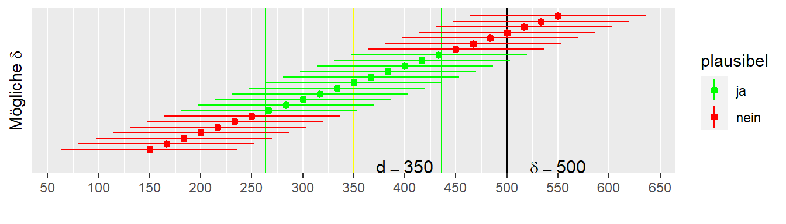

9 Parameterschätzung
Bisher haben wir die Daten mittels Hypothesentests betrachtet. D.h. wir haben eine \(H_0\) und \(H_1\)-Hypothese formuliert und dann anhand der Stichprobenverteilung abgeschätzt wie kompatible unsere beobachteter Wert mit der \(H_0\)-Hypothese ist. Dadurch haben eine dichotome Betrachtung der Daten durchgeführt. Entweder der beobachtete Wert war statistisch signifikant unter der \(H_0\) oder eben nicht. Diese Unterteilung der Entscheidung in nur zwei verschiedene Ausgänge kann, neben dem Problem das wir eine Frage beantworten die wir oftmals gar nicht gestellt haben, bringt aber ein paar Grundlegende Nachteile mit sich die wir uns nun genauer anschauen.
Das folgende Beispiel ist stark angelehnt bzw. entnommen aus Cumming (2013, p.1). Wir haben zwei Forschergruppen. Die Gruppen Glücklich und Pech. Beide Gruppen haben das gleiche Experiment durchgeführt, eine Krafttrainingsintervention. Die Gruppe Glücklich hat insgesamt \(N = 44\) TeilnehmerInnen in zwei unabhängigen Gruppen, während die Gruppe Pech \(N = 36\) TeilnehmerInnen in zwei unabhängigen Gruppen untersucht hat. Die beiden Untersuchung kamen zum folgenden Ergebnis (siehe Tabelle 9.1)
| Gruppe | \(D_{MW}\) | \(D_{STD}\) | Statistik | p-Wert |
|---|---|---|---|---|
| Glücklich | \(3.61\) | \(6.97\) | \(t(42) = 2.43\) | \(0.02\) |
| Pech | \(2.23\) | \(7.59\) | \(t(34) = 1.24\) | \(0.22\) |
Wenn wir eine Irrtumswahrscheinlichkeit von \(\alpha = 0.05\) ansetzten. Dann hat unter den beobachteten Daten nur die Gruppe Glücklich ein statistisch signifikantes Ergebnis, da der p-Wert \(p = 0.02 < 0.05 = \alpha\) ist. Die Gruppe Pech dagegen hat kein statistisch Signifikantes Ergebnis und kann mit \(p = 0.22 > 0.05 = \alpha\) die \(H_0\) nicht ablehnen. Wenn wir nun die zu den beiden Untersuchungen gehörenden Veröffentlichungen lesen würden, und die Ergebnisse streng dichotom betrachten würden, dann hätten wir zwei widersprüchliche Ergebnisse. Wir könnten das versuchen zu erklären, dass die Stichprobengröße in Pech zu klein und vielleicht zu variabel ist. Allerdings, wenn wir das Ergebnis von Glücklich ansetzen dann hätte die Power für Pech ausgereicht tatsächlich ausgereicht um relativ sicher Power \(>.9\) um eine statistisch signifikantes Ergebnis zu beobachten. Stellen wir die beiden Effekte einmal graphisch dar.
Wenn wir uns die Differenzen in Abbildung 9.1 anschauen. Dann sehen die Ergebnisse eigentlich gar nicht so widersprüchlich aus. Beide Effekte sind in der gleichen Richtung, nur die Effektstärke unterscheidet sich zwischen den beiden Gruppen. Wenn uns jemand zwingen würde eine Abschätzung zu geben wir groß der Effekt der Trainingsintervention ist, dann würde wir wahrscheinlich einen Wert zwischen den beiden beobachteten Werte angeben. Schauen wir uns mal einen anderen Fall an.
Hätten wir das Ergebnis aus Abbildung 9.2 beobachtet, dann würde wir wahrscheinlich schon eher von einem widersprüchlichen Ergebnis in der Literatur sprechen. Wenn wir wieder unter Zwang einen Wert angeben müssten, dann wahrscheinlich einen in der Nähe von \(D = 0\). In beiden Fällen haben wir aber unter der rein dichotomen Betrachtung das gleiche Ergebnis (1 x statisch signifikant + 1 x statistisch nicht signifikant). Daraus können wir schließen, dass wir bei der Interpretation von Forschungsergebnissen nicht nur auf statistisch signifikant ja oder nein schauen sollten. Wir müssen auch immer die die Effektrichtungen und deren Größe genauer anschauen um uns ein Bild des Forschungsstandes zu machen. Dazu gehört natürlich auch noch eine Betrachtung des Forschungsdesigns und insbesondere der Stichprobengröße \(N\). Deren Einfluss schauen wir uns im Folgenden etwas genauer an.
9.1 Wie groß und präzise ist der beobachtete Effekt?
Aus den Ausführungen von eben ist also klar, dass wir den beobachteten Effekt auch dokumentieren müssen, da er für die Interpretation des Ergebnisse wichtig ist. Letztendlich ist die Größe des Effekts auch ausschlaggebend ob ich zum Beispiel eine Trainingsintervention mit meinen Athletinnen durchführe. Mir reicht es nicht zu wissen das ein statistisch signifikanter Effekt in Studien gefunden wurde, sondern ich möchte auch die Größe des Effekts wissen.
Gehen wir zurück zu unseren Lummerland-Beispiel. Das Ergebnis der Intervention könnte beispielsweise die folgenden Stichprobenkennwerte bei \(N = 9\) haben. Wir beobachten einen Unterschied von \(D = \bar{x}_{treat} - \bar{x}_{con} = 350\) zwischen den Gruppen. Beide Stichproben zeigen eine Standardabweichung von \(s = 54\) was zu einem Standardfehler von \(s_e = 44\) führt (Rechnung unterschlagen). Dies ist unsere Schätzung der Populationsparameter anhand der Stichprobe. Der Standardfehler gibt uns eine Schätzung über die Präzision unseres Schätzwertes \(D\). Wenn der Standardfehler \(s_e\) sehr groß ist, dann bedeutet dies, dass wir den Wert nur sehr unpräzise geschätzt haben. Anderes herum wenn \(s_e\) sehr klein ist. Daran schließt sichg natürlich die Frage, was die Präzision für meine Schätzung bedeutet. Welche anderen Unterschiedswerte \(D\) sind anhand der beobachteten Daten noch plausibel?
9.2 Welche \(\delta\)s sind plausibel für \(D = 350\)?

Plausibel unter einem gegebenem \(\alpha\)-Level!
9.3 Alle möglichen \(\delta\)s die plausibel sind

9.4 Was passiert wenn ich das Experiment ganz oft wiederhole?

9.5 Konfidenzintervall - Das Kleingedruckte
- Das Konfidenzintervall für ein gegebenes \(\alpha\)-Niveau gibt nicht die Wahrscheinlichkeit an mit der der wahre Parameter in dem Intervall liegt.
- Das Konfidenzintervall gibt alle mit den Daten kompatiblen Populationsparameter an.
- Das \(\alpha\)-Niveau des Konfidenzintervalls gibt an bei welchem Anteil von Wiederholungen davon auszugehen ist, das das Konfidenzintervall den wahren Populationsparameter enthält.
9.6 Konfidenzintervall herleiten nach Spiegelhalter (2019, p.241)
- We use probability theory to tell us, for any particular population parameter, an interval in which we expect the observed statistic to lie with 95% probability.
- Then we observe a particular statistic.
- Finally (and this is the difficult bit) we work out the range of possible population parameters for which our statistic lies in their 95% intervals. This we call a “95% confidence interval”.
- This resulting confidence interval is given the label “95%” since, with repeated application, 95% of such intervals should contain the true value.1
All clear? If it isn’t, then please be reassured that you have joined generations of baffled students.
9.7 Konfidenzintervall berechnen (Vorschau)
\[ \textrm{CI}_{1-\alpha} = \bar{x} \pm z_{\alpha/2} \times s_e \]
9.8 Dualität von Signifikanztests und Konfidenzintervall
Wenn das Konfidenzintervall mit Niveau \(1-\alpha\%\) die \(H_0\) nicht beinhaltet, dann wird auch bei einem Signifikanztest die \(H_0\) bei einer Irrtumswahrscheinlichkeit von \(\alpha\) abgelehnt.
Strictly speaking, a 95% confidence interval does not mean there is a 95% probability that this particular interval contains the true value […]↩︎